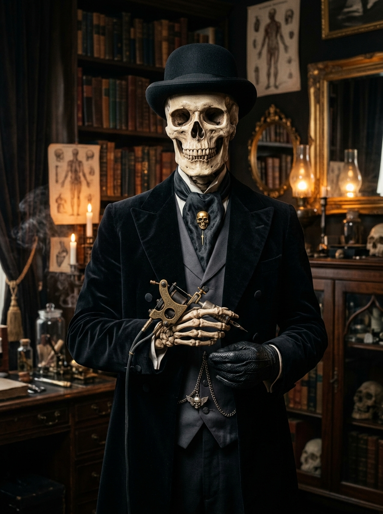

Senior InkerLord Archibald Graves
Fine-Line Copperplate & Etching
Renowned throughout high society for micro-etched anatomical crosshatches, historical engravings, and medieval memento mori inscriptions.
Attire: Tailored velvet double-breasted frock coat, silk ascot with gold skull pin.